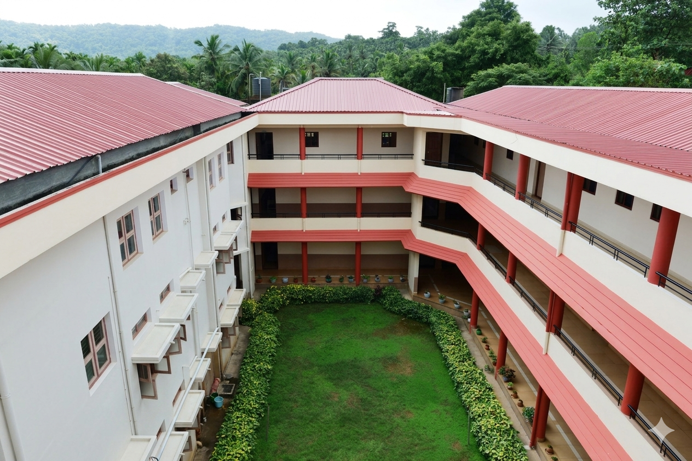

Big ideas from curious minds
Students explore science and mathematics through working models and creative thinking.
Read the story
SDM Secondary School · Ujire
A place to discover, to belong, and to become.
Learning rooted in character and inspired by possibility.
Welcome to SDM
School is where a child begins to see what they can become.
At SDM Secondary School, Ujire, academic learning sits alongside cultural understanding, practical experience and care for others. It is an education that makes room for both achievement and character.
From the classroom to the playground, students have opportunities to ask questions, discover their interests and grow with their community.
Our story
Some of the best lessons
happen beyond a classroom.
The SDM approach
Encouraging questions, exploration and thoughtful learning.
Practising respect, responsibility and care in everyday life.
Making space for different interests, talents and aspirations.
Academics & facilities
Experiences that connect ideas to the world around us, supported by teachers who make learning meaningful.
Science, mathematics and computer laboratories give students opportunities to connect classroom concepts with practical exploration.
Explore facilitiesThe school library offers a place to read, discover new interests and build the habit of independent learning.
Discover the libraryMeet the people who support students in their learning and help them develop confidence, curiosity and good habits.
Meet our facultyCultural activities and value-based learning encourage students to reflect on how they relate to others and contribute to their community.
Explore school life
Our guiding vision
The school’s journey is shaped by the guidance of Dr. D. Veerendra Heggade and a commitment to education that serves society.
Life beyond the classroom
Shared experiences, small discoveries and proud moments. This is where confidence grows and memories begin.
Discover Tudita, a distinctive part of the school’s learning experience.
Explore TuditaThe school journal
Students explore science and mathematics through working models and creative thinking.
Read the story
A Teachers’ Day celebration planned and led by students to honour their teachers.
Read the story
Celebrating the students who represented the school at the taluk-level chess tournament.
Read the storyYour next chapter
Choosing a school starts with a conversation.
Get to know SDM, explore the campus and speak with the school office about your child’s next step.
Admission informationAsk about available classes, eligibility and the admission process.
Contact the office to arrange a convenient time to visit.
The school office can confirm the required documents, fees and next steps.
Come and say hello
SDM Secondary School
Near KSRTC Bus Stand, Antemajalu,
Dharmasthala, Belthangady Taluk,
Dakshina Kannada, Karnataka – 574216